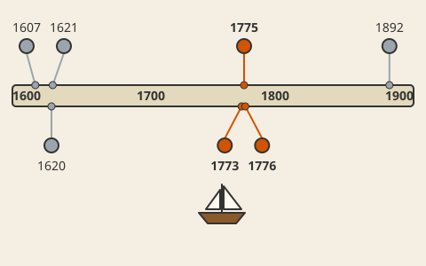

Unabhängigkeit der USA
Mit einem KI-Tutor lernen
Ein KI-Tutor erklärt dir diese Seite und hilft dir bei den Aufgaben. Wähl deinen Assistenten:
Mit Claude öffnen Mit ChatGPT öffnen Mit Mistral Vibe öffnen
Du nutzt dein eigenes Konto beim Anbieter. Der Assistent ist kein Angebot von lernapps.net: lernapps liefert nur Inhalte und Aufgaben. Die Wahl gilt für alle Seiten, nur auf diesem Gerät.
Der Vierte Juli
Mr Hill hat der Klasse eine Frage mitgegeben, und Sophie fragt Jayden. Den Vierten Juli kennst du von den Festen. Vorher eine Frage an dich.
Aufgabe
Lösung
Zu Spanien
Kolumbus segelte für Spanien, aber diese Kolonien waren britisch.
Zu Großbritannien richtige Antwort
Es waren britische Kolonien.
Zu den Niederlanden
Die Pilger lebten zwar in den Niederlanden, aber die Kolonien waren britisch.
Die dreizehn Kolonien gehörten zu Großbritannien.
Das kannst du danach: Du erklärst, wie aus Kolonien ein Land wurde, und nennst Sichtweisen: Kolonisten, die Regierung im Mutterland und versklavte Menschen.
Jayden erzählt vom Vierten Juli
- Sophie: Mr Hill asked: What do Americans celebrate on the Fourth of July?
- Jayden: The birthday of my country! In 1776, thirteen British colonies wrote a paper called the Declaration of Independence.
- Sophie: Why did they want to be free?
- Jayden: They had to pay British taxes, but nobody from the colonies sat in the British Parliament.
- Sophie: And what about the tea?
- Jayden: That was the Boston Tea Party in December 1773. Men from Boston threw more than three hundred chests of tea into the water. Some of them dressed like Native Americans.
- Jayden: Britain answered with hard new laws in 1774. The war began in April 1775.
- Sophie: So the Tea Party was on the Fourth of July?
- Jayden: No! On the Fourth of July 1776, Congress agreed to the text of the Declaration. Thomas Jefferson, one of the Founding Fathers, wrote the first draft.
- Sophie: Is the Declaration the same as the Constitution?
- Jayden: No. The Declaration says why the colonies were free. The Constitution came later and says how the country works.
- Sophie: Did "all men are created equal" mean everybody?
- Jayden: People asked that question even in 1776. In all thirteen colonies, slavery was legal. Enslaved Africans and African Americans were not free.
| Englisch | Deutsch |
|---|---|
| to celebrate | feiern |
| the Declaration of Independence | die Erklärung der Unabhängigkeit |
| legal | erlaubt |
| the colony | die Kolonie |
| the tax | die Steuer |
| Parliament | das Parlament (in Großbritannien) |
| the chest | die Kiste |
| to throw, threw | werfen, warf |
| Congress | der Kongress (damals die Versammlung der Kolonien, heute das Parlament der USA) |
| the draft | der Entwurf |
| the Founding Fathers | die Gründerväter der USA |
| the Constitution | die Verfassung |
| slavery | die Sklaverei |
| enslaved | versklavt (nicht frei) |
Verstehen, belegen, meinen
Aufgabe
Lösung
Sie ist die Verfassung der USA.
Die Verfassung kam später.
Sie wurde bei der Boston Tea Party geschrieben.
Die Tea Party war 1773, die Declaration 1776.
Der Kongress nahm sie am 4. Juli 1776 an. richtige Antwort
So sagt es Jayden in Zeile 9.
Sie erklärt 1776, warum die Kolonien frei sein wollen. richtige Antwort
So sagt es Jayden in Zeile 11.
Die Declaration ist keine Verfassung.
Aufgabe
Lösung
Zeile 2
Zeile 2 handelt von der Declaration.
Zeile 7 richtige Antwort
Hier steht der Beginn des Krieges.
Zeile 6
Zeile 6 handelt von der Tea Party.
Zeile 11
Zeile 11 handelt von der Verfassung.
Zeile 7: Der Krieg begann im April 1775.
Offene Aufgabe
Die Kolonien erklären sich für unabhängig: Wer gewinnt, wer verliert? Schreibe zwei bis drei Sätze auf Englisch.
Tipp
Schau in die Zeilen 4 und 13.
Eine gute Antwort enthält:
Lösung
The colonists won a country with its own government. Britain lost thirteen colonies. But in 1776 slavery was legal in all the colonies, and enslaved people were not free, so "all men are created equal" did not mean everybody.
Ein berühmter Satz

© CC-BY-4.0Die Zeitachse wächst: Die drei orangen Punkte liegen nur wenige Jahre auseinander.
We hold these truths to be self-evident, that all men are created equal, that they are endowed by their Creator with certain unalienable Rights, that among these are Life, Liberty and the pursuit of Happiness.
Merke
Die Declaration of Independence (Unabhängigkeitserklärung) ist ein Text von 1776. Hilfe für den Satz oben: self-evident selbstverständlich, created geschaffen, equal gleich, rights Rechte, Liberty Freiheit, Happiness Glück.
Übung
Aufgabe
Lösung
Richtige Antwort: 1. Männer aus Boston werfen Tee ins Wasser., 2. Großbritannien antwortet mit harten neuen Gesetzen., 3. Der Krieg beginnt., 4. Der Kongress nimmt die Declaration an.
Tea Party 1773, harte Gesetze 1774, Kriegsbeginn im April 1775, Declaration im Juli 1776.
Aufgabe
Lösung
Richtige Antwort: We have no say in Parliament, so we should not pay its taxes. – Kolonisten, die Unabhängigkeit wollten; Parliament has the right to make laws for the colonies. – die britische Regierung; You say all men are equal, but you keep enslaved people. – Kritiker, die auf die Sklaverei hinwiesen
Die Kolonisten wollten mitreden, die Regierung sah das Parlament als höchste Macht, Kritiker zeigten auf die Sklaverei.
Aufgabe
Lösung
Nur Männer aus Boston haben Rechte.
Der Satz spricht von allen Menschen.
Alle Menschen sind gleich geschaffen und haben Rechte wie Leben und Freiheit. richtige Antwort
So steht es im Text der Declaration.
Der König von Großbritannien hat immer recht.
Die Declaration kritisiert den König.
Der Satz nennt Gleichheit und Rechte.
Aufgabe
Ergänze das Verb in der Vergangenheit.
Tipp
Diese drei Verben sind unregelmäßig. Schau in die Zeilen 6, 7 und 9.
- Die Männer warfen die Kisten ins Wasser. → The men … the chests into the water.
- Jefferson schrieb den ersten Entwurf. → Jefferson … the first draft.
- Der Krieg begann 1775. → The war … in 1775.
Lösung
- The men threw the chests into the water.
- Jefferson wrote the first draft.
- The war began in 1775.
Aufgabe
Hör zu und schreibe, was du hörst.
Tipp
Hör jeden Satz zweimal.
- KI
- KI
- KI
Lösung
- Many people in the colonies were angry.
- The war began before the Declaration.
- Many people read the Declaration in the newspapers.
Selbst sprechen
Aufgabe
Hör zu, sprich nach und nimm dich auf. Vergleiche dann mit dem Original.
Tipp
Sprich langsam nach. Achte auf thirteen, Boston und Massachusetts.
- Thirteen colonies became one new country.KI
- Boston is in the state of Massachusetts.KI
- Thomas Jefferson was a Founding Father.KI
Zum Aufnehmen braucht diese Aufgabe JavaScript. Die Beispiele kannst du auch ohne anhören.
Lösung
- Thirteen colonies became one new country.
- Boston is in the state of Massachusetts.
- Thomas Jefferson was a Founding Father.
Nächster Halt
Die neuen USA wachsen im 19. Jahrhundert. Die Weltkarte zeigt Wagenzüge, die nach Westen ziehen. Wer lebt dort schon?
Fehler gefunden oder eine Idee für diese App?